Lab 03: Colors with Animal Sounds
CS631
Alison Hill
1 Overview
There are 10 challenges total- none are in the “continuous colors” section, but you can use that section to complete the tenth challenge on your own. Upload your knitted html document by next Wednesday at noon to Sakai!
2 Slides for today
knitr::include_url("slides/03-slides.html")3 Packages
Other packages will be needed to be installed as you go- reveal the first code chunks when in doubt!
library(tidyverse)4 Read in the data
Use this code chunk to read in the data available at http://bit.ly/cs631-meow:
sounds <- read_csv("http://bit.ly/cs631-meow")Or store it locally:
sounds <- read_csv(here::here("data", "animal_sounds_summary.csv"))5 Colour vs fill aesthetic
Fill and colour scales in ggplot2 can use the same palettes. Some shapes such as lines only accept the colour aesthetic, while others, such as polygons, accept both colour and fill aesthetics. In the latter case, the colour refers to the border of the shape, and the fill to the interior.
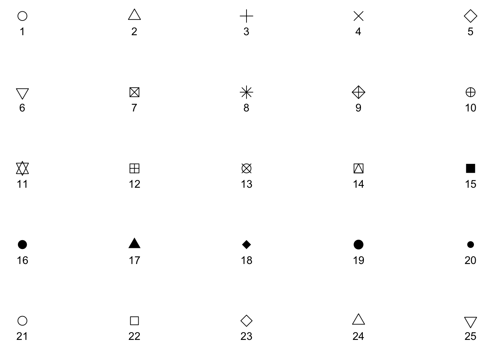
All symbols have a foreground colour, so if we add color = "navy", they all are affected.
s + geom_point(aes(shape = z), size = 4, colour = "navy") 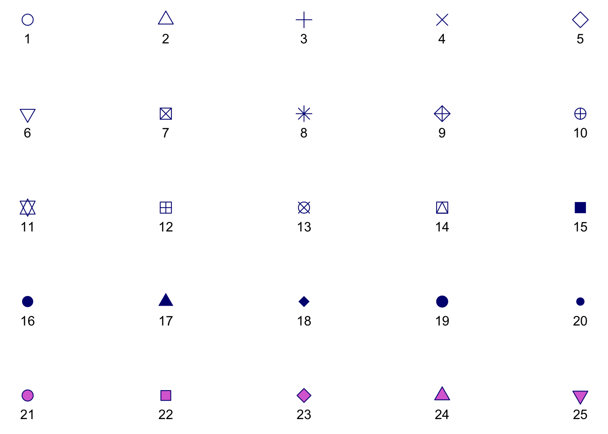
While all symbols have a foreground colour, symbols 21-25 also take a background colour (fill). So if we add fill = "orchid", only the last row of symbols are affected.
s + geom_point(aes(shape = z), size = 4, colour = "navy", fill = "orchid") 
6 Data
For the rest of today, we’ll play with the sounds dataset. This data was derived from the R package wordbankr, an R interface to access Wordbank- an open source database of children’s vocabulary development. The tool used to measure children’s language and communicative development in this database is the MacArthur-Bates Communicative Development Inventories (MB-CDI). The MD-CDI is a parent-reported questionnaire.
Here is a glimpse of the data:
glimpse(sounds)Observations: 33
Variables: 7
$ age <dbl> 8, 8, 8, 9, 9, 9, 10, 10, 10, 11, 11, 11, 12, ...
$ sound <chr> "cockadoodledoo", "meow", "woof woof", "cockad...
$ kids_produce <dbl> 1, 0, 3, 0, 2, 2, 0, 5, 4, 0, 5, 12, 0, 12, 28...
$ kids_understand <dbl> 3, 10, 12, 2, 21, 22, 9, 41, 40, 4, 36, 32, 16...
$ kids_respond <dbl> 35, 35, 35, 91, 93, 93, 139, 145, 143, 94, 94,...
$ prop_produce <dbl> 0.02857143, 0.00000000, 0.08571429, 0.00000000...
$ prop_understand <dbl> 0.08571429, 0.28571429, 0.34285714, 0.02197802...Note that the unit of observation here is one-row-per-age-group/animal sound.
Variables you need for this lab:
age: child age in monthssound: a string describing a type of animal soundkids_produce: the number of parents who answered “yes, my child produces this animal sound” (note that if the child produces a sound it is assumed that they understand it as well)kids_respond: the number of parents who responded to this question at allprop_produce: the proportion of kids whose parents endorsed that their child produces this animal sound, out of all questionnaires administered (i.e.,kids_produce / kids_respond)
Other variables in this dataset:
kids_understand: the number of parents who answered “yes, my child understands what this animal sound means” (note that a child can understand the sound but not produce it)prop_understand: the proportion of kids whose parents endorsed that their child understands this animal sound, out of all questionnaires administered (i.e.,kids_understand / kids_respond)
7 Discrete vs continuous variables
WHAT IS THE DIFFERENCE BETWEEN CATEGORICAL, ORDINAL AND INTERVAL VARIABLES?
In order to use color with your data, most importantly, you need to know if you’re dealing with discrete or continuous variables.
7.1 Discrete color palettes
Discrete color palettes work best when you want to color by a qualitative variable. Qualitative variables tend to be either categorical or ordinal. Different variables can be qualitative or quantitative depending on context.
In this dataset, sound is a categorical variable with 3 possible values:
sounds %>%
distinct(sound) %>%
knitr::kable()| sound |
|---|
| cockadoodledoo |
| meow |
| woof woof |
We could map arbitrary numbers onto each of these sounds, like 1, 2, and 3- but the numbers still would not mean anything. That is, there is no intrinsic ordering to these categories. Examples of common pure categorical variables are race or ethnicity, gender, hair color, eye color, etc. Coloring by sound is used as a way to distinguish the data for different sounds from each other (read more here: http://serialmentor.com/dataviz/color-basics.html#color-as-a-tool-to-distinguish)
7.2 Continuous color palettes
Continuous color palettes work best when you want to color by a quantitative variable. Quantitative variables tend to be either ordinal or continuous. In this dataset, age (in months) can only take on a limited set of values:
sounds %>%
distinct(age) %>%
pull [1] 8 9 10 11 12 13 14 15 16 17 18However, in the following plots, we’ll treat age as a continuous variable plotted across the x-axis. In some contexts, this kind of variable could be treated as a ordinal variable. However, for color purposes, this would not ideal here since there are 11 “categories” (see http://serialmentor.com/dataviz/color-pitfalls.html). Age has a natural and meaningful order: a child who is 9 months old is 1 month older than one who is 8 months old. So, we’ll use that natural ordering to our advantage and not use color to represent age as a variable. When you do apply a continuous color palette, you’ll want to use color to your advantage to represent data values.
8 Know your data
- How many variables?
- Which variables are continuous?
- Which ones are categorical or ordinal?
- How many total kids do we have data for?
- How many ages (in months)?
- How many kids per age?
- How many types of animal sounds? What are they?
Let’s start just by getting a feel for how many kids produce each kind of sound, across the full age range. We could make a table:
sounds %>%
group_by(sound) %>%
summarize(total_produce = sum(kids_produce)) %>%
knitr::kable()| sound | total_produce |
|---|---|
| cockadoodledoo | 148 |
| meow | 681 |
| woof woof | 940 |
Or we could make a simple bar plot:
ggplot(sounds, aes(x = sound, y = kids_produce)) +
geom_col() +
labs(x = "Sound", y = "Total Children Producing")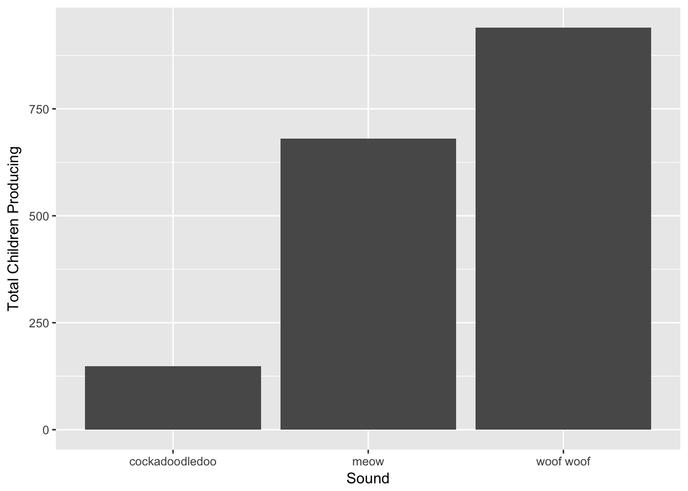
For this kind of plot, we don’t really need color. What if we want to see how the number of kids who produce each sound varies by age? We’ll change the x-axis to age and instead facet_wrap by sound, and make the y-axis a proportion instead of counts.
ggplot(sounds, aes(x = age, y = prop_produce)) +
geom_col() +
labs(x = "Age (mos)", y = "Proportion of Children Producing") +
facet_wrap(~sound)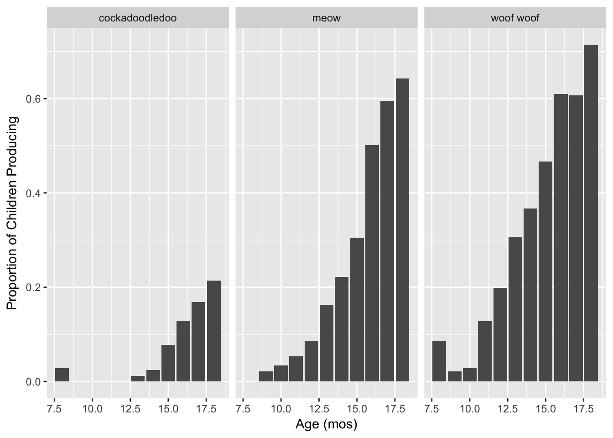
The bar geom makes this a little hard to read and compare across facets though. Let’s try points instead.
ggplot(sounds, aes(x = age, y = prop_produce)) +
geom_point() +
labs(x = "Age (mos)", y = "Proportion of Children Producing") +
facet_wrap(~sound)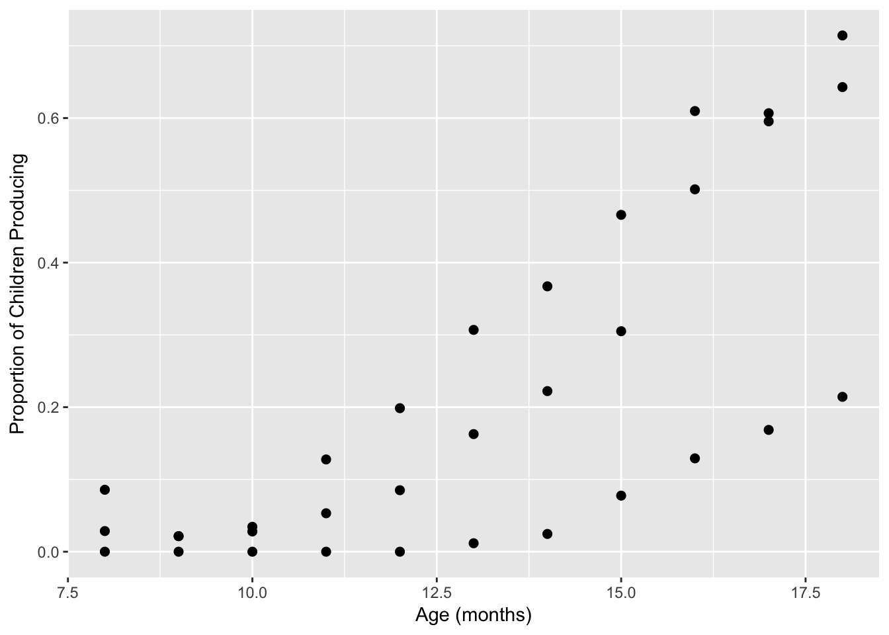
That is a little better! Facets allow us to parse the relationship between two quantitative variables (here, age and proportion of kids producing) by a qualitative variable (here, type of sound). Another way we could do this, instead of facetting, is to use color. This would make it easier to compare proportions at each age.
9 Discrete colors
Let’s start with a base plot with age (in months) along the x-axis and the proportion of children producing each word along the y-axis, using points as the geometric object. Set the size of the points to 2 and change the x- and y-axis labels to “Age (months)” and “Proportion of Children Producing”, respectively.
ggplot(sounds, aes(x = age, y = prop_produce)) +
geom_point(size = 2) +
labs(x = "Age (months)", y = "Proportion of Children Producing")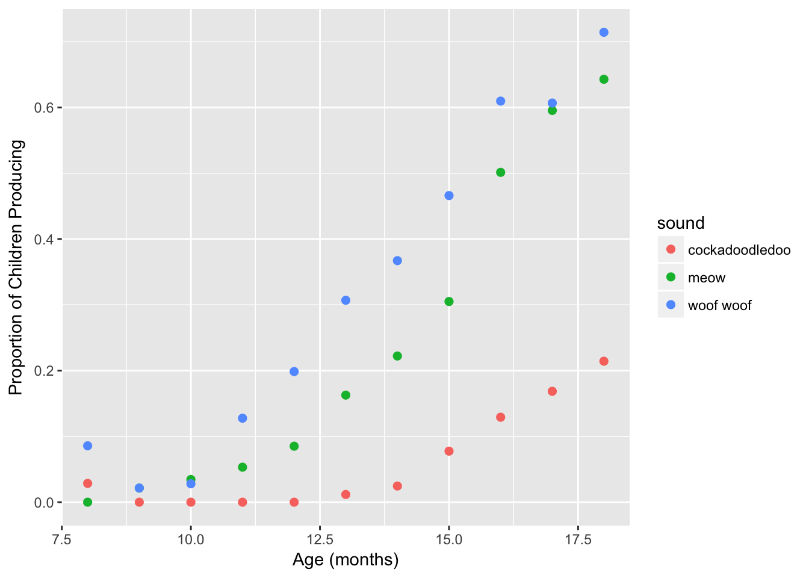
9.1 Default discrete palette
Take the plot we just made, and edit the code to map the color of the points to the type of sound produced at the geom level. The colors that show up are the default discrete palette in ggplot2.
ggplot(sounds, aes(x = age, y = prop_produce)) +
geom_point(aes(color = sound), size = 2) +
labs(x = "Age (months)", y = "Proportion of Children Producing")
Try adding geom_line() to this plot to connect the dots. Does this look right? Use ?geom_line to figure out how this geom connects the dots by default, and which aesthetic can be used to connect cases together. Try editing your code to draw 3 black lines- one for each sound.
# Does this look right? no!
ggplot(sounds, aes(x = age, y = prop_produce)) +
geom_line() +
geom_point(aes(color = sound), size = 2) +
labs(x = "Age (months)", y = "Proportion of Children Producing") 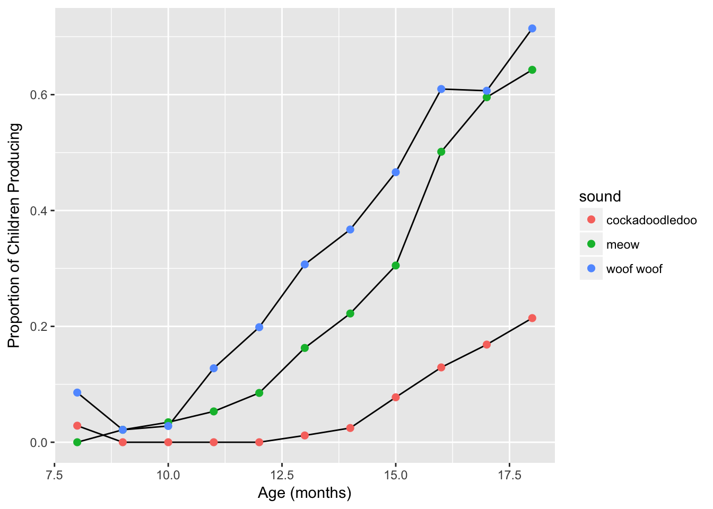
# A possible solution
ggplot(sounds, aes(x = age, y = prop_produce)) +
geom_line(aes(group = sound)) +
geom_point(aes(color = sound), size = 2) +
labs(x = "Age (months)", y = "Proportion of Children Producing") 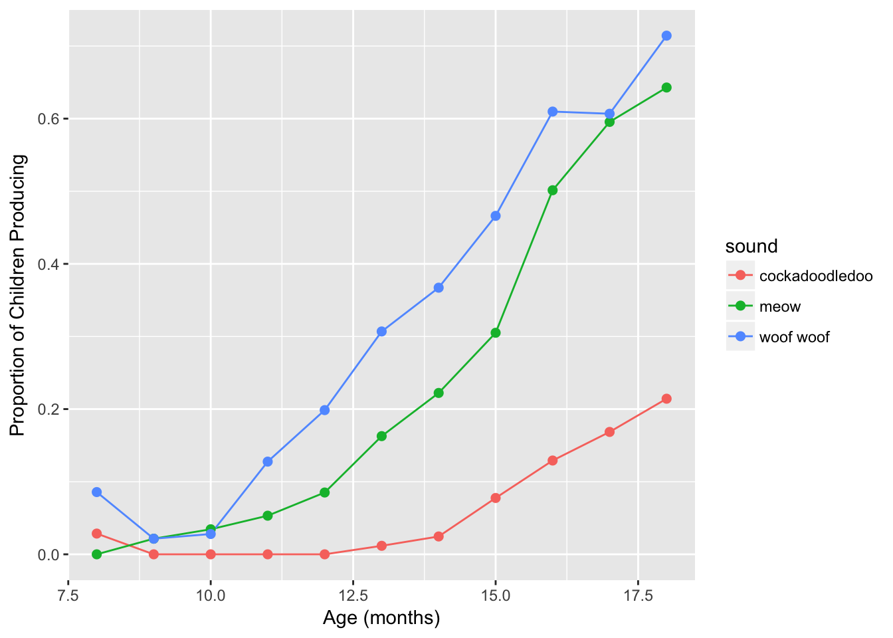
Make two plots:
Recreate the plot above, but this time map color to the type of sound produced for both the point and line geoms. Pay attention to the order of the layers you are adding- you may wish to place
geom_linebeforegeom_pointso the lines are always “painted” underneath the points.Instead of
geom_line, add a loess line usinggeom_smooth. Use?geom_smoothto figure out how to get rid of the grey standard error ribbon. You may also want to increase the line width.
# Does this look right? yes!
ggplot(sounds, aes(x = age, y = prop_produce, color = sound)) +
geom_line() +
geom_point(size = 2) +
labs(x = "Age (months)", y = "Proportion of Children Producing") 
ggplot(sounds, aes(x = age,
y = prop_produce,
color = sound)) +
geom_smooth(se = FALSE, lwd = .5) +
geom_point(size = 2) +
labs(x = "Age (months)", y = "Proportion of Children Producing") 
Why does this work? To tell geom_line how to connect your dots, you can either:
- Map the
groupaesthetic (soaes(group = sound)), or - Map the
coloraesthetic globally (aes(color = sound).
Because geom_line understands the color aesthetic, it will try to draw separate lines for each color. Here that translates to three lines, one for each sound, which is what we want!
9.2 Brief aside: factors
At this point, our plot is looking pretty good. But you may have noticed that the legend order doesn’t match the lines. We can fix that using the forcats package, which is for categorical variables. There are lots of functions in forcats, and you can install & load it separately, although forcats is loaded with the tidyverse.
install.packages("forcats")
library(forcats)We’ll use the fct_reorder2 function, which works for when you have a line chart of two quantitative variables, colored by a factor variable. Let’s see the difference.
sounds <- sounds %>%
mutate(sound = as.factor(sound))
sound_traj <- ggplot(sounds, aes(x = age,
y = prop_produce,
color = fct_reorder2(sound, age, prop_produce))) +
geom_smooth(se = FALSE, lwd = .5) +
geom_point(size = 2) +
labs(x = "Age (months)",
y = "Proportion of Children Producing",
color = "sound")
sound_traj
MUCH BETTER! Save your plot object as sound_traj. Now we can start playing with the actual colors.
9.3 Set luminance and saturation (chromaticity)
The default qualitative palette works fine here. The addition of scale_color_hue changes nothing.
sound_traj +
scale_color_hue()
We can also change these settings within the default color palette, where the arguments are:
h= range of hues to use, in [0, 360]l= luminance (lightness)c= chroma (intensity of color)
# Change hue (l and c are defaults)
sound_traj +
scale_color_hue(h = c(0, 90), l = 65, c = 100)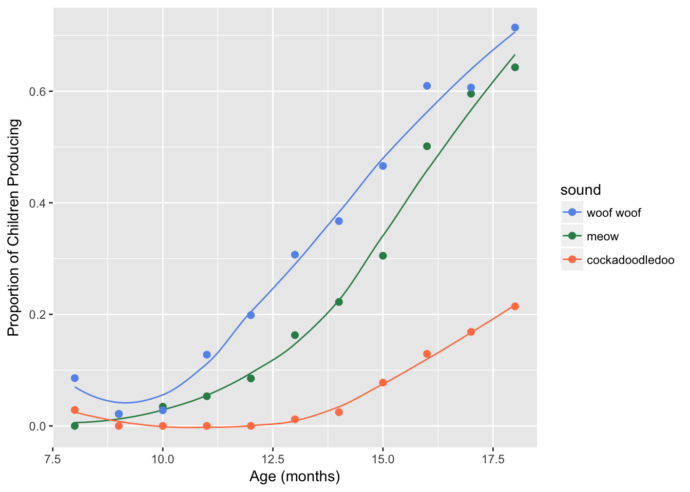
# Use luminance=45, instead of default 65
sound_traj +
scale_color_hue(l = 45)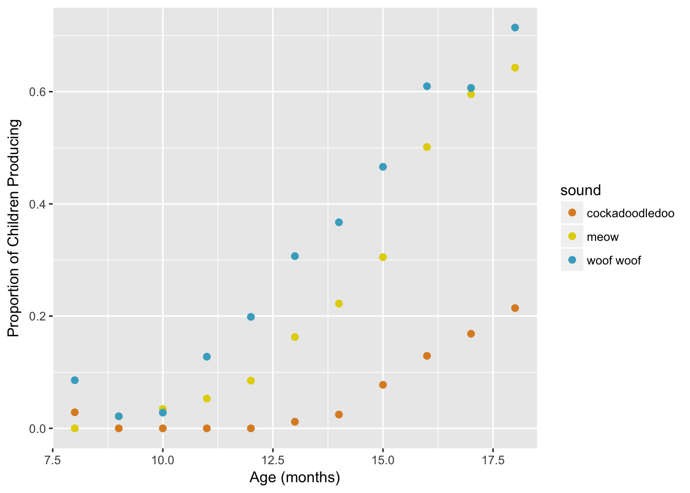
# Reduce saturation (chroma) from 100 to 50, and increase luminance
sound_traj +
scale_color_hue(l = 75, c = 50)
9.4 Set discrete colors
We can change the actual colors used by adding the layer scale_color_manual or scale_fill_manual. Confusion between which to use when is often the cause of much frustration!
To name more than one color, which you often want to do, use c(). In the parentheses, named colors and hex colors are always in quotes.
sound_traj +
scale_color_manual(values = c("cornflowerblue",
"seagreen", "coral"))
View the code blocks below. Copy and paste the code to run them in your own file. Why do neither of the following code blocks change the colors of the points and lines? Use your words :) (the answer is below the challenge, but try to trouble-shoot on your own first)
ggplot(sounds, aes(x = age,
y = prop_produce,
color = fct_reorder2(sound, age, prop_produce))) +
geom_smooth(se = FALSE, lwd = .5) +
geom_point(size = 2) +
labs(x = "Age (months)",
y = "Proportion of Children Producing",
color = "sound") +
scale_fill_manual(values = c("cornflowerblue",
"seagreen", "coral"))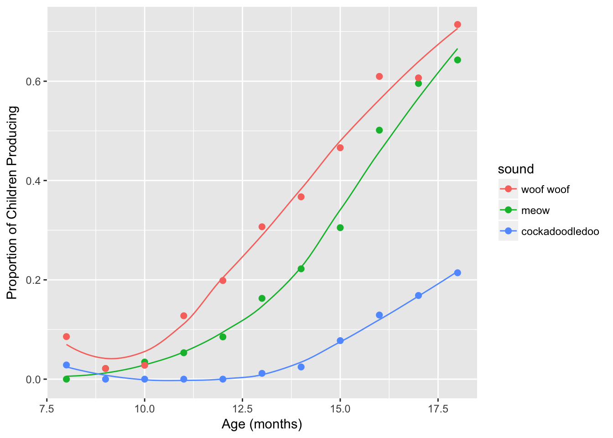
ggplot(sounds, aes(x = age,
y = prop_produce,
fill = fct_reorder2(sound, age, prop_produce))) +
geom_smooth(se = FALSE, lwd = .5) +
geom_point(size = 2) +
labs(x = "Age (months)",
y = "Proportion of Children Producing",
fill = "sound") +
scale_fill_manual(values = c("cornflowerblue",
"seagreen", "coral"))Answers:
- In the first, we used
scale_fill_manual, but the in the global aesthetics, we mapped thecolor, notfill, aesthetic onto thesoundvariable. - In the second, we did define the
fillaesthetic and usedscale_fill_manual, so that is good. Butgeom_lineonly understands thecoloraesthetic, notfill. And forgeom_point, the default shape for is 19, which does not understand thefillaesthetic.
Start with this plot:
sound_traj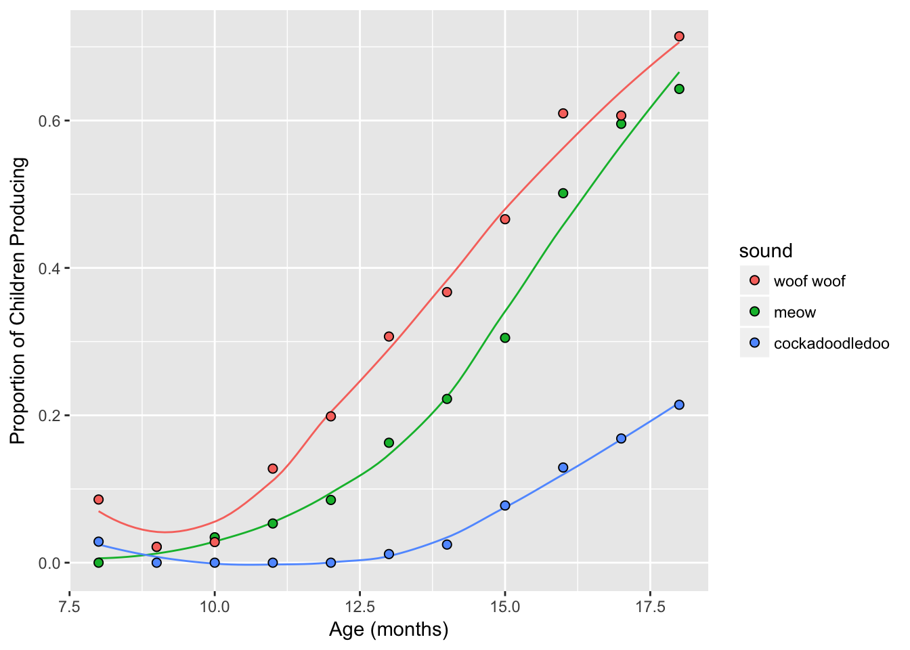
Add a black outline to the points, and color the inside of the points and the lines by sound using the default discrete color palette. You may also wish to edit the legends on this plot: geom_smooth has an argument called show.legend = FALSE. See if you prefer the plot with this change.
If this was easy, try applying the same custom color palette to the inside of the points and to the lines.
ggplot(sounds, aes(x = age,
y = prop_produce,
fill = fct_reorder2(sound, age, prop_produce))) +
geom_smooth(aes(color = fct_reorder2(sound, age, prop_produce)),
se = FALSE, lwd = .5, show.legend = FALSE) +
geom_point(size = 2, shape = 21) +
labs(x = "Age (months)",
y = "Proportion of Children Producing",
fill = "sound")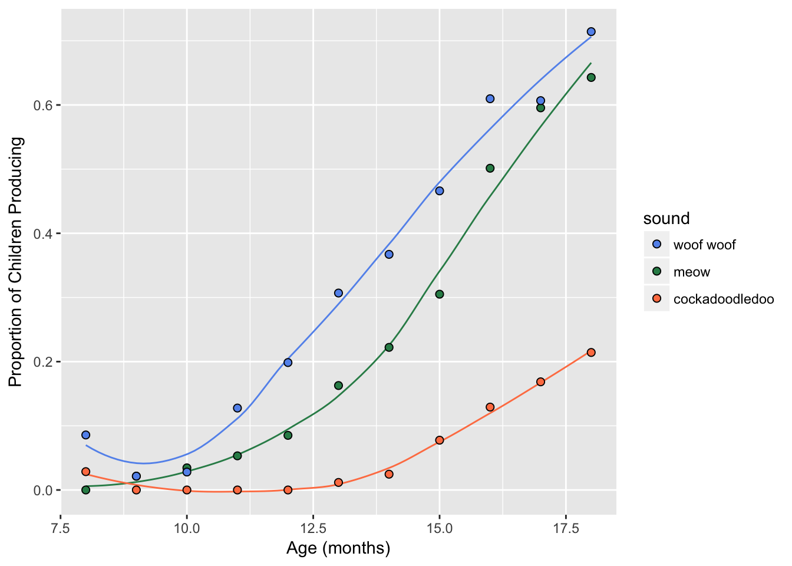
ggplot(sounds, aes(x = age,
y = prop_produce,
fill = fct_reorder2(sound, age, prop_produce))) +
geom_smooth(aes(color = fct_reorder2(sound, age, prop_produce)),
se = FALSE, lwd = .5, show.legend = FALSE) +
geom_point(size = 2, shape = 21) +
labs(x = "Age (months)",
y = "Proportion of Children Producing",
fill = "sound") +
scale_fill_manual(values = c("cornflowerblue",
"seagreen", "coral")) +
scale_color_manual(values = c("cornflowerblue",
"seagreen", "coral"))
You can also define your color palette as a vector outside of ggplot2. Below, I made an object called my_colors outside of ggplot2. To use it, we call that object within the scale_colour_manual function.
my_colors <- c("cadetblue", "steelblue", "salmon") # quote color names
sound_traj +
scale_color_manual(values = my_colors) # note: not in quotes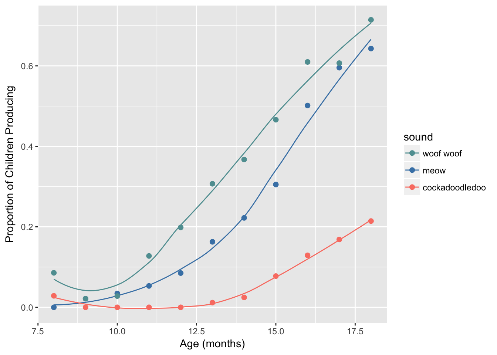
Define a custom color palette using hexadecimal colors (#rrggbb), and apply it using scale_color_manual to your sound_traj plot. Some basic ones are here:
https://sashat.me/2017/01/11/list-of-20-simple-distinct-colors/
Parse the hexadecimal string like so: #rrggbb, where rr, gg, and bb refer to color intensity in the red, green, and blue channels, respectively.
# from https://github.com/mwaskom/seaborn/blob/master/seaborn/palettes.py
sb_colorblind <- c("#0072B2", "#009E73", "#D55E00",
"#CC79A7", "#F0E442", "#56B4E9")
sound_traj +
scale_colour_manual(values = sb_colorblind)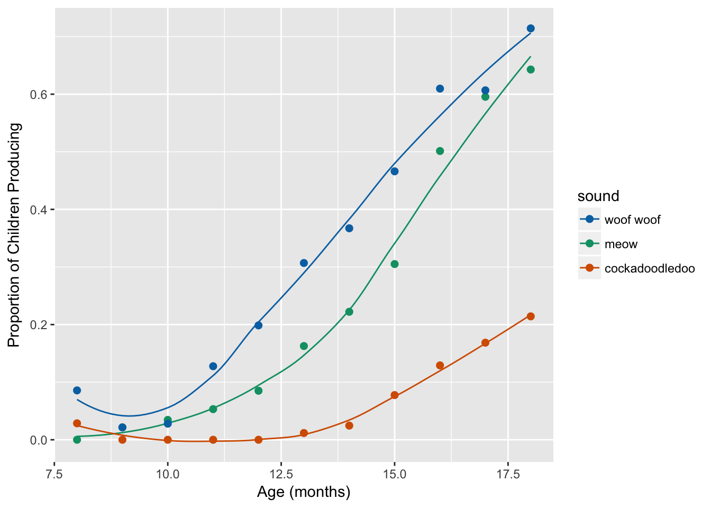
9.5 Built-in discrete palettes
9.5.1 Colorbrewer
To use Colorbrewer palettes, you’ll need to install the RColorBrewer package from CRAN. This chunk of code tells you how:
install.packages("RColorBrewer")
library(RColorBrewer)Colorbrewer has a few qualitative palettes named: Accent, Dark2, Paired, Pastel1, Pastel2, Set1, Set2, Set3. Here is how to view them:
brewer.pal(5, "Dark2") # list 5 hex colors[1] "#1B9E77" "#D95F02" "#7570B3" "#E7298A" "#66A61E"display.brewer.pal(5, "Dark2") # view 5 hex colors
And here is how you use them:
sound_traj +
scale_color_brewer(palette = "Dark2")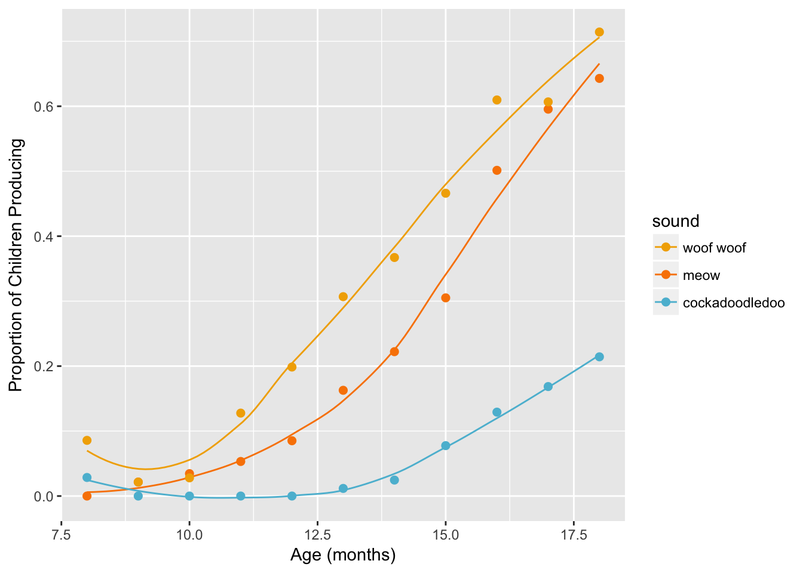
9.5.2 Wes Anderson palettes
My favorite! To use Wes Anderson palettes, you’ll need to install the wesanderson package from CRAN. This chunk of code tells you how:
install.packages("wesanderson")
library(wesanderson)names(wes_palettes) # all the palette names [1] "GrandBudapest" "Moonrise1" "Royal1" "Moonrise2"
[5] "Cavalcanti" "Royal2" "GrandBudapest2" "Moonrise3"
[9] "Chevalier" "Zissou" "FantasticFox" "Darjeeling"
[13] "Rushmore" "BottleRocket" "Darjeeling2" wes_palette("GrandBudapest2") # view named palette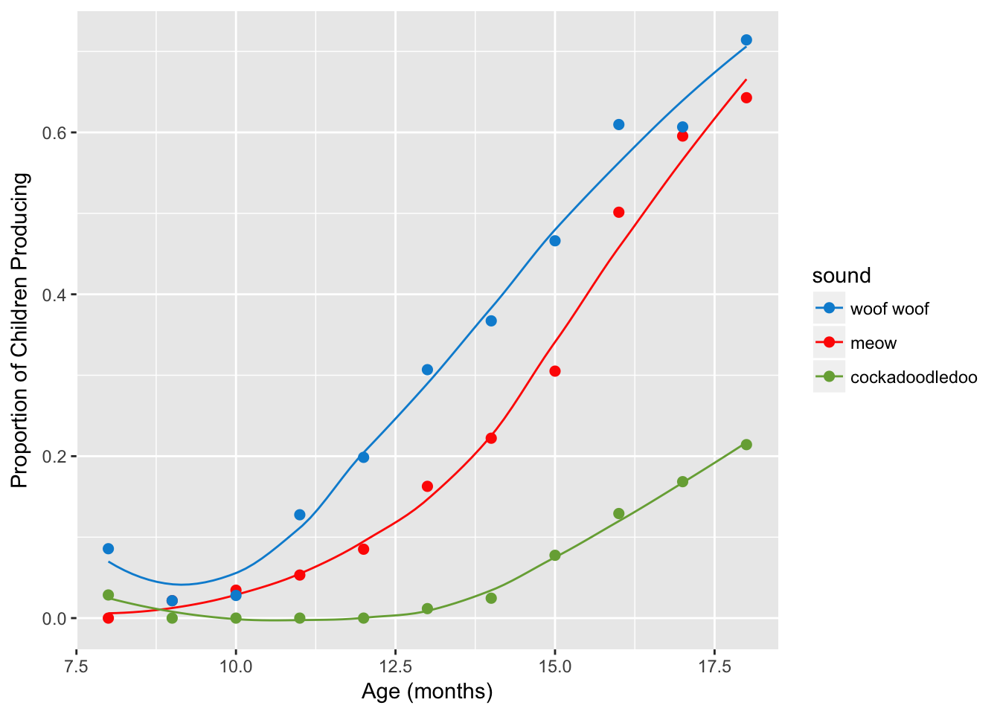
wes_palette("GrandBudapest2")[1:4] # list first 4 hex colors[1] "#E6A0C4" "#C6CDF7" "#D8A499" "#7294D4"wes_palette("GrandBudapest2")[c(1,4)] # list colors 1 and 4[1] "#E6A0C4" "#7294D4"To use these palettes, use scale_color_manual where values is set to wes_palette("name"). For example:
sound_traj +
scale_color_manual(values = wes_palette("Darjeeling"))
sound_traj +
scale_color_manual(values = wes_palette("FantasticFox"))
What if you just don’t want to use the colors in the order they are in? Use a wes_palette of your choice. Using our code from above, try picking the last 3 colors of a palette. Add it to your sound_traj plot.
If this was easy, try using colors 2, 3, and 5 instead.
sound_traj +
scale_color_manual(values = wes_palette("Darjeeling")[3:5])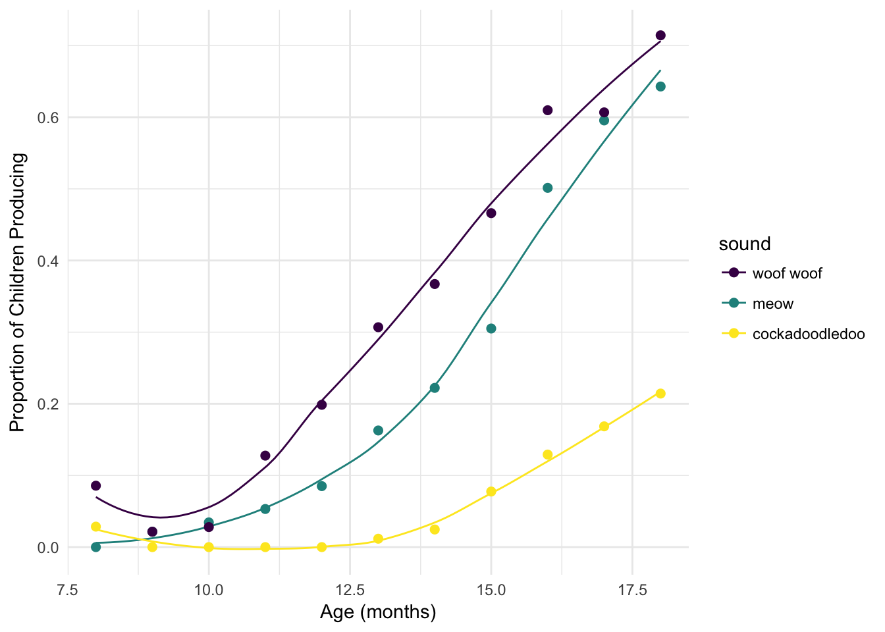
sound_traj +
scale_color_manual(values = wes_palette("FantasticFox")[c(2, 3, 5)])9.5.3 ggthemes palettes
To use these palettes, you’ll need to install the ggthemes package from CRAN. This chunk of code tells you how:
install.packages("ggthemes")
library(ggthemes)sound_traj +
scale_color_fivethirtyeight()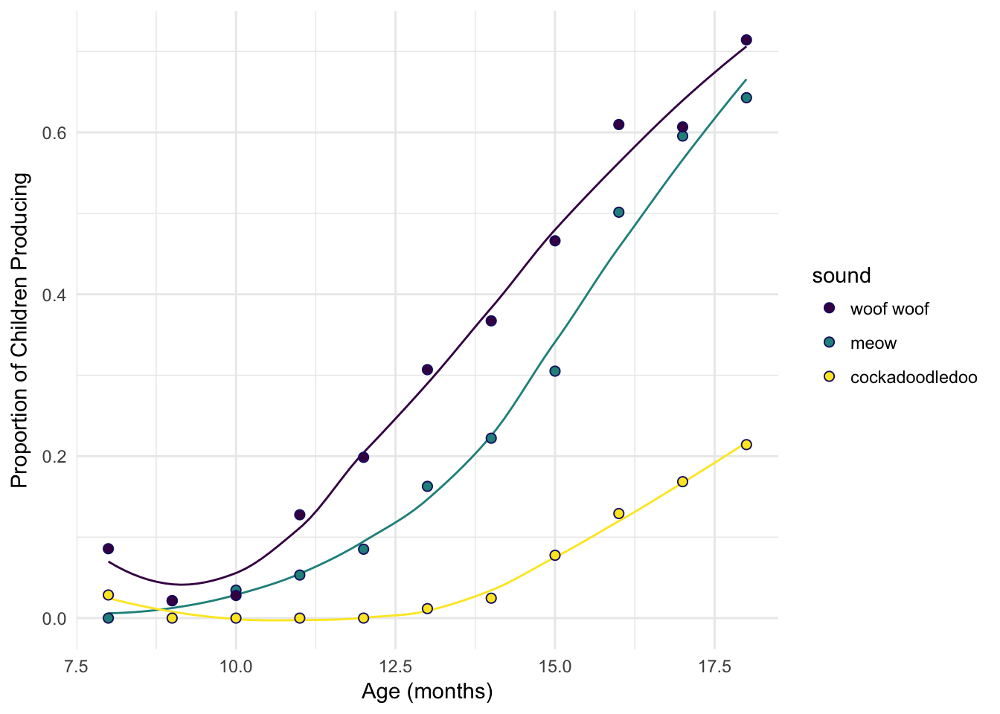
sound_traj +
scale_color_economist()
9.5.4 Palettes from the Queen Bee
To use Beyonce palettes, you’ll need to install the beyonce package from GitHub using devtools::install_github(). This chunk of code tells you how:
install.packages("devtools")
devtools::install_github("dill/beyonce")
library(beyonce)Note that a number of students had installation problems with this package! Move on if you do.
beyonce_palette(18)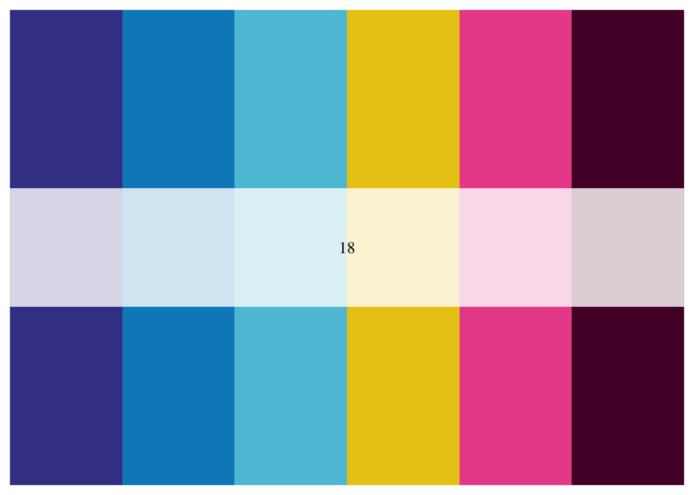
sound_traj +
scale_color_manual(values = beyonce_palette(18)[3:5])
Here we’ll only use the first, fourth, and fifth colors in the palette.
sound_traj +
scale_color_manual(values = beyonce_palette(18)[c(1, 4, 5)])
9.5.5 Viridis palettes
To use, you’ll need to install the viridis package from CRAN. This chunk of code tells you how:
install.packages("viridis")
library(viridis)Read more here in the viridis vignette. The default argument for discrete is FALSE, so to use the discrete palettes you need to set discrete = TRUE. There are four colormap options available:
- “magma” (or “A”),
- “inferno” (or “B”),
- “plasma” (or “C”),
- “viridis” (or “D”, the default option).
sound_traj +
scale_color_viridis(discrete = TRUE) +
theme_minimal()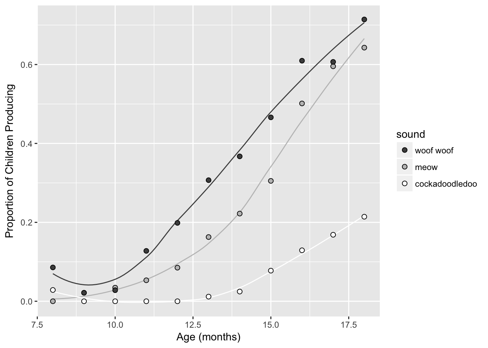
sound_traj +
scale_color_viridis(discrete = TRUE, option = "plasma") +
theme_minimal()
Use the viridis package to color the points by and the lines by sound; make the outline of the points “midnightblue”. Pick any colormap option, and play with theme_bw or theme_minimal to see what you like.
ggplot(sounds, aes(x = age,
y = prop_produce,
fill = fct_reorder2(sound, age, prop_produce))) +
geom_smooth(aes(color = fct_reorder2(sound, age, prop_produce)),
se = FALSE, lwd = .5, show.legend = FALSE) +
geom_point(size = 2, shape = 21, colour = "midnightblue") +
labs(x = "Age (months)",
y = "Proportion of Children Producing",
fill = "sound") +
scale_fill_viridis(discrete = TRUE) +
scale_color_viridis(discrete = TRUE) +
theme_minimal()9.6 Greyscale for discrete
Use scale_color_grey or scale_fill_grey, or sometimes both depending on your geoms and the aesthetics they understand.
sound_traj +
scale_color_grey() +
theme_minimal()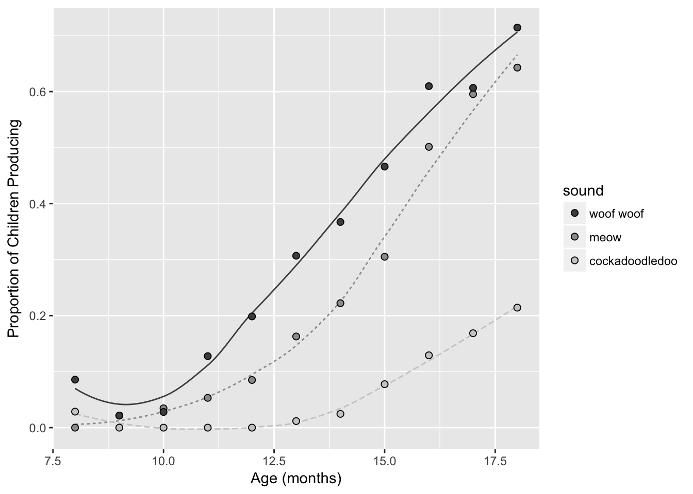
Set start and end
sound_traj +
scale_color_grey(start = 0.2, end = .8) 
Make the same plot but make points outlined in black
ggplot(sounds, aes(x = age,
y = prop_produce,
fill = fct_reorder2(sound, age, prop_produce))) +
geom_smooth(aes(color = fct_reorder2(sound, age, prop_produce)),
se = FALSE, lwd = .5, show.legend = FALSE) +
geom_point(size = 2, shape = 21) +
labs(x = "Age (months)",
y = "Proportion of Children Producing",
fill = "sound") +
scale_fill_grey(start = 0.3, end = 1) +
scale_color_grey(start = 0.3, end = 1) 
Suggest redundancy in greyscale- try changing line type instead of line (or in addition to) line color.
Change line type by sound, set color to black.
ggplot(sounds, aes(x = age,
y = prop_produce,
fill = fct_reorder2(sound, age, prop_produce))) +
geom_smooth(aes(lty = fct_reorder2(sound, age, prop_produce)), color = "black",
se = FALSE, lwd = .5, show.legend = FALSE) +
geom_point(size = 2, shape = 21) +
labs(x = "Age (months)",
y = "Proportion of Children Producing",
fill = "sound") +
scale_fill_grey(start = 0.3, end = 1) 
Change both!
ggplot(sounds, aes(x = age,
y = prop_produce,
fill = fct_reorder2(sound, age, prop_produce))) +
geom_smooth(aes(color = fct_reorder2(sound, age, prop_produce),
lty = fct_reorder2(sound, age, prop_produce)),
se = FALSE, lwd = .5, show.legend = FALSE) +
geom_point(size = 2, shape = 21) +
labs(x = "Age (months)",
y = "Proportion of Children Producing",
fill = "sound") +
scale_fill_grey(start = 0.3, end = .8) +
scale_color_grey(start = 0.3, end = .8) 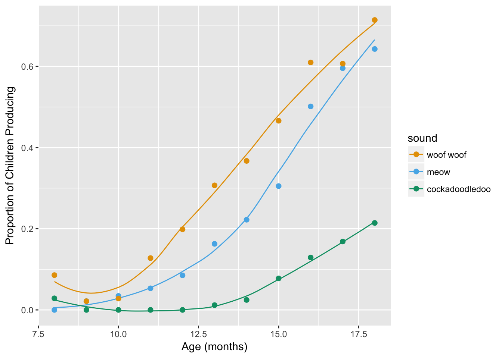
9.7 Colorblind-friendly palettes
The colorblindr package can be used to “simulate colorblindness in production-ready R figures.” To use this package, you’ll need to first install the cowplot package from GitHub using devtools::install_github(). You’ll also need to install the colorspace package from CRAN. Finally, you can then use devtools::install_github() again to install the colorblindr package. This code chunk shows you how to do all 3 installs to use the colorblindr package:
devtools::install_github("wilkelab/cowplot")
install.packages("colorspace", repos = "http://R-Forge.R-project.org")
devtools::install_github("clauswilke/colorblindr")To use:
# save a ggplot object
my_sound_traj <- sound_traj +
scale_color_manual(values = beyonce_palette(18)[c(1, 4, 5)])View that figure after color-vision-deficiency simulation:
library(colorblindr)
cvd_grid(my_sound_traj)
You can also use the colorblind-friendly palette in this package using scale_color_OkabeIto and scale_fill_OkabeIto:
cb_sound_traj <- sound_traj +
scale_color_OkabeIto()
cb_sound_traj
cvd_grid(cb_sound_traj)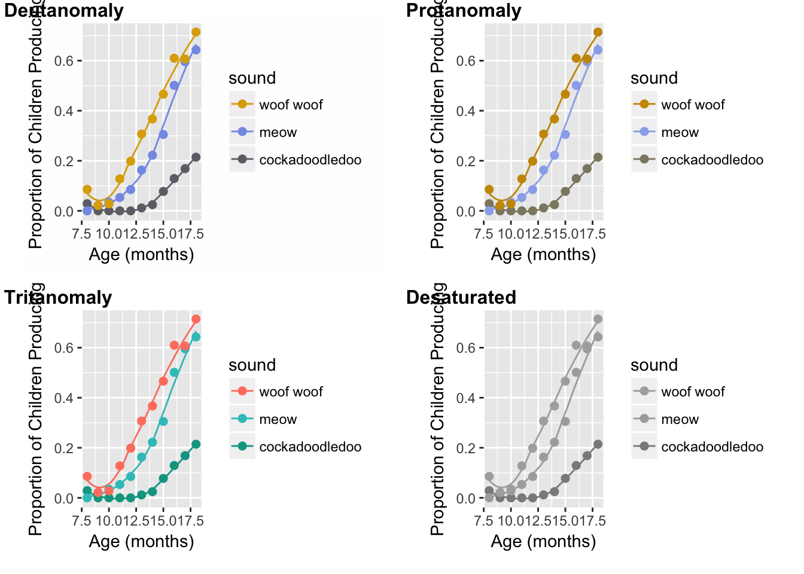
You can still use this colorblind-friendly palette without the colorblindr package though. Here are the colors!

The Cookbook for R provided the matching hex colors too to make life easier:
cbbPalette <- c("#000000", "#E69F00", "#56B4E9", "#009E73", "#F0E442", "#0072B2", "#D55E00", "#CC79A7")
# To use for line and point colors, add
sound_traj +
scale_colour_manual(values = cbbPalette[c(3, 7, 8)])
9.8 Repel labels
library(ggrepel)
sounds <- sounds %>%
mutate(label = case_when(
age == max(age) ~ sound))
ggplot(sounds, aes(x = age,
y = prop_produce,
color = fct_reorder2(sound, age, prop_produce))) +
geom_smooth(se = FALSE, lwd = .5) +
geom_point(size = 2) +
labs(x = "Age (months)",
y = "Proportion of Children Producing") +
geom_text_repel(aes(label = label),
nudge_x = 1,
direction = "y",
na.rm = TRUE) +
guides(color = FALSE)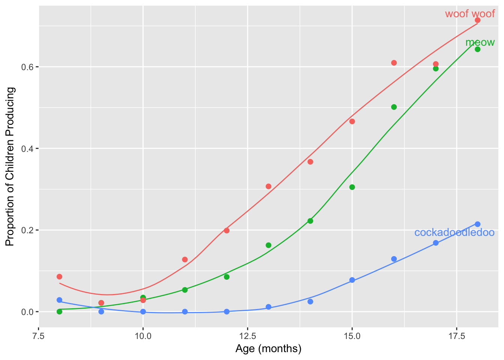
10 Continuous colors
N.B. All of the example plots below are great examples of how not to use continuous colors. I’m showing these so you can see how to work with continuous color palettes, and to make this topic flow easier for you I’m sticking with original dataset.
10.1 Default continuous palette
Let’s map color to a continuous variable. For this, we are returning to geom_line instead of geom_smooth, because the latter doesn’t respond to continuous color palettes.
sound_by_age <- ggplot(sounds, aes(x = age,
y = prop_produce,
color = age)) +
geom_line(aes(group = sound), lwd = .5) +
geom_point(size = 2) +
labs(x = "Age (months)",
y = "Proportion of Children Producing")
sound_by_age
10.2 Color choice with continuous variables
With discrete colors, we used either scale_color_manual or scale_fill_manual (and sometimes both were needed!). For continuous colors, we use either scale_color_gradient or scale_fill_gradient.
sound_by_age +
scale_color_gradient()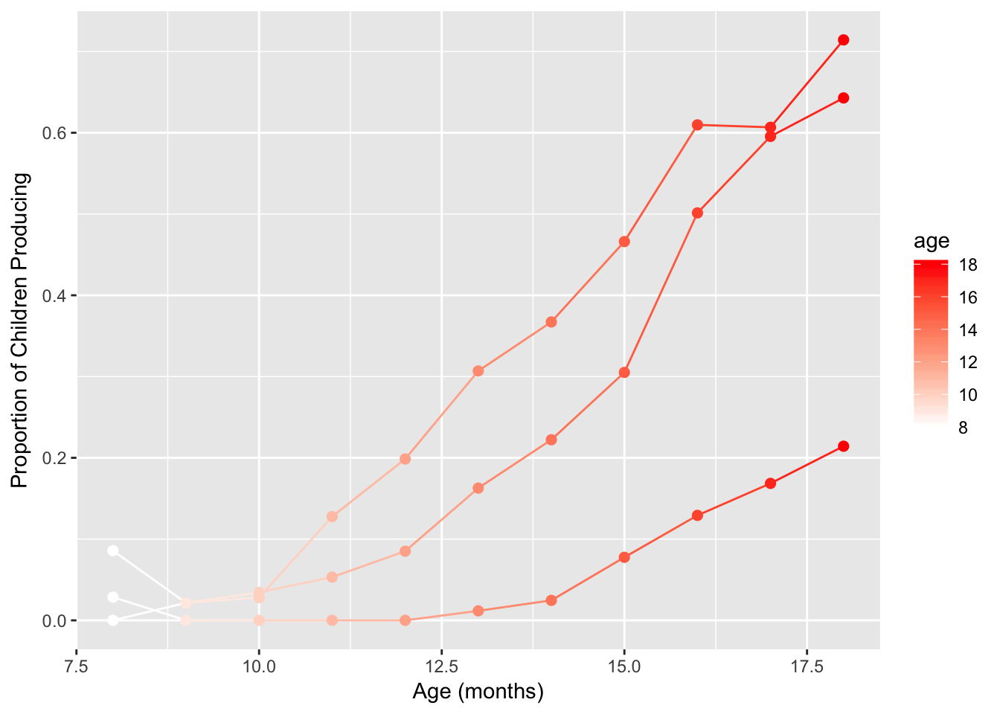
You can reverse the gradient scale…
sound_by_age +
scale_color_gradient(trans = "reverse")
sound_by_age +
scale_color_gradient(low = "white", high = "red")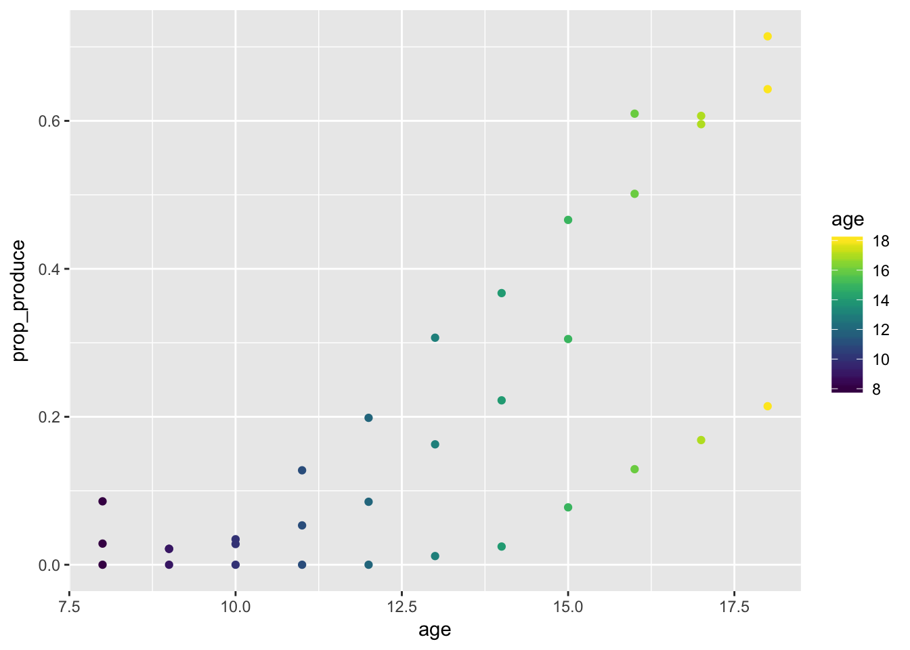
We can make this same plot using a custom greyscale gradient.
sound_by_age +
scale_color_gradient(low = "grey90", high = "black")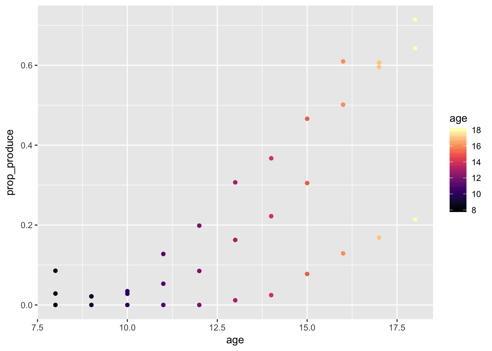
So scale_color_gradient gives you a sequential gradient, but you may want a diverging color scheme instead. For that, you can use scale_color_gradient2
# Diverging color scheme
med_age <- sounds %>%
summarize(mos = median(age)) %>%
pull()
sound_by_age +
scale_color_gradient2(midpoint = med_age,
low="blue", mid="white", high="red" )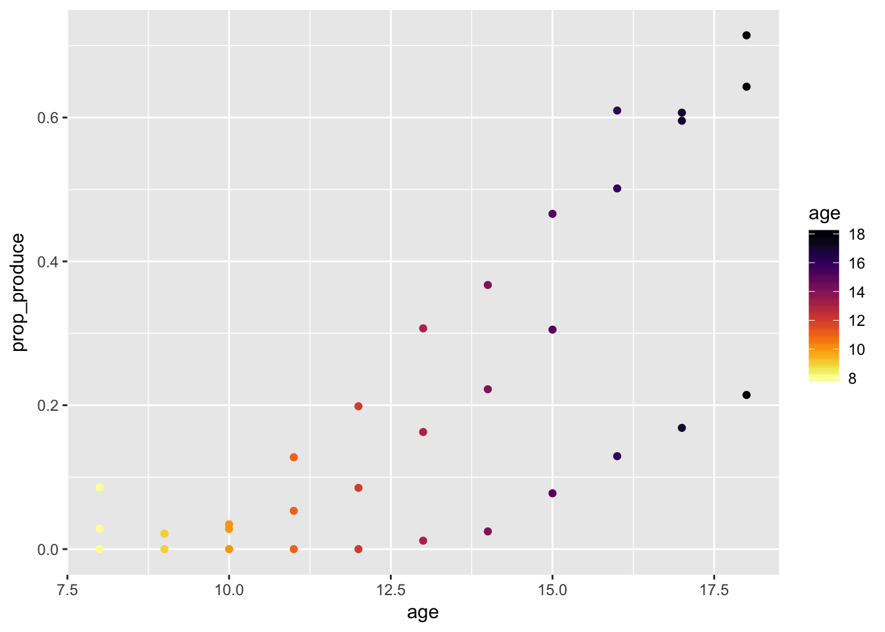
10.3 Built-in continuous palettes
10.3.1 Use RColorBrewer
Again, to use you need to install and load the RColorBrewer palette.
library(RColorBrewer)Then use scale_color_gradientn.
sound_by_age +
scale_color_gradientn(colours = brewer.pal(n=5, name="PuBuGn"))
Reverse the colors…
sound_by_age +
scale_color_gradientn(colours = rev(brewer.pal(n=5, name="PuBuGn")))
10.3.2 Viridis
Read more here in the viridis vignette
library(viridis)The default is the viridis palette within the viridis package!
Note! For discrete == FALSE (the default) all other arguments are as to scale_fill_gradientn or scale_color_gradientn.
sound_by_age +
scale_color_viridis()
sound_by_age +
scale_color_viridis(option = "magma")
Read the help function for ?scale_color_viridis. We’ll use the “inferno” palette in reverse.
sound_by_age +
scale_color_viridis(option = "inferno", begin = 1, end = 0)
11 Final challenge (#10)
Using new data, make three new plots. Use any geom that makes sense. The plots should:
- Have x- and y-axes that are each quantitative variables.
- Apply a non-default color palette, either coloring by a qualitative variable (discrete colors) or a quantitative variable (continuous colors). This list of R color palettes has even more ideas than we could cover in class.
In the first plot, you must wield color carefully and effectively. The addition of the color/fill aesthetics must be done in a way that the interpretation of the plot improves. Also, you must show how your colors fare for colorblind viewers. Include 2-3 sentences about why you made the plot that you did. What questions does your plot answers (or perhaps what questions does your plot raise)?
In the second plot, you must make a greyscale version of your first plot! And again, it must look good and make sense.
In the third plot, you must use color badly. Make a plot where the colors are either redundant, confusing, or just generally non-sensical. Explain why this last visualization fails.
Some data ideas:
- MacArthur-Bates Communicative Development Inventory (MB-CDI), a family of parent-report questionnaires measuring children’s vocabulary understanding and production
- R package
wordbankr - See my code here
- R package
- POTUS Executive Orders
- National Electronic Injury Surveillance System (NEISS)
- R package
neiss - Follow Julia Silge’s code-through here
- R package
- Flights
- Building Permits
- Cocktail Balance
- NASA Weather
- Social Security Administration Baby Names
- R package
babynames - Follow Julia Silge ‘My Baby Boomer Name Might Have Been “Debbie”’: https://juliasilge.com/blog/my-baby-boomer-name/
- Follow Hilary Parker: Hilary: The Most Poisoned Baby Name in US History: https://hilaryparker.com/2013/01/30/hilary-the-most-poisoned-baby-name-in-us-history/
- R package
- Youth Behavior Risk Surveillance System
- Gun sales
- Data
- Some example plots here
- Gapminder